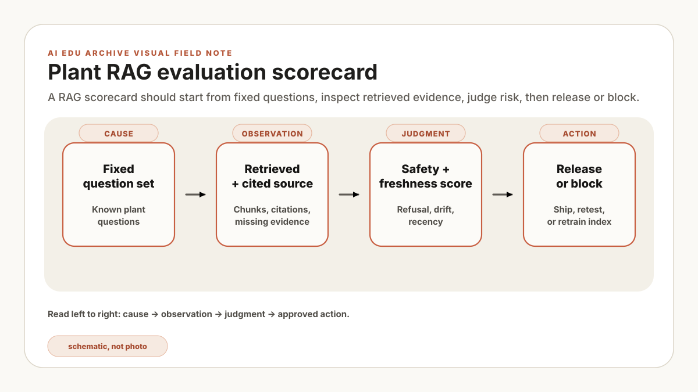

candidate=rag-2026.07.14-rc2, retrieval_cases_changed=7, permission_failures=0, stale_current_failures=1. The last field keeps the candidate on hold even if its average answer score improved. A release review needs the failed case IDs, not just the headline percentage.
A release candidate arrives with four inputs: an immutable corpus manifest, a versioned evaluation set, a build manifest, and the previous released report. The harness compares those artifacts before any user-facing promotion. A polished answer outside that record is a demonstration, not release evidence.
The RAG platform owner runs the harness. Document owners approve expected sources and revision status. Domain owners grade operational completeness. IT/security owns permission cases. The service owner records the decision, limitations, and rollback target. Keep the build on hold until every required owner has signed the report.
An evaluation harness is like the golden wafer, monitor lot, or gauge check you use before trusting a process trend. You do not declare a metrology tool healthy because it gave one nice number. You run the same checks repeatedly and watch whether it drifts. RAG needs the same discipline: fixed questions, fixed expectations, and a clear pass/fail gate.
Why demos fail in production
Most RAG demos are optimized for the happy path: clean documents, clear questions, obvious answers, and a friendly presenter. Plant operations are different. A technician asks with local shorthand. An engineer asks about a fault that happens only after a wet clean. A manager asks for a summary across several tools where one SOP was superseded but still exists in the archive. If the system answers confidently from the wrong revision, the demo has become a liability.
The evaluation harness turns this problem into routine engineering. It keeps a frozen set of realistic questions, the expected source documents, the grading rules, and the threshold for release. Every change to chunking, embedding, reranking, prompt wording, model version, permissions, or ingestion must pass the harness before it reaches users.
The timing made a prompt change look responsible for worse procedure answers. The case diff moved the investigation upstream: the required rev-08 chunk had already fallen out of top-k after an index rebuild, so generation never received it. The action was to hold the build and investigate retrieval first. This constructed snag is a reminder to grade stages separately, not evidence about a deployed system.
For plant RAG, evaluation is not a research afterthought. It is the control loop that lets the system earn operational trust.
The fixed evaluation set
An initial set might contain 80 to 150 questions, but that range is an illustrative starting point rather than a release standard. Size and stratify the set by use-case severity, source families, roles, revisions, and known failure modes. Each question should come from an approved work pattern. Split the set into five buckets:
- Lookup questions: direct facts from one current document.
- Procedure questions: ordered steps where missing one step matters.
- Comparison questions: differences between two revisions, recipes, tools, or constraints.
- Exception questions: what to do when the normal path is blocked.
- Refusal questions: questions the system should not answer because the user lacks permission or the source is absent.
For each question, store the expected source IDs, the minimum answer criteria, forbidden claims, and the user role. That last field matters. A correct answer for a process owner may be an access-control failure for a contractor.
A domain reviewer checks four questions: Which source supports the answer? Which revision is current? What changed? Which action or claim is prohibited? Missing support or an unresolved prohibition keeps that case on hold even when the prose is fluent.
- id: etch_042_revision_check
role: process_engineer
question: "For Tool E-17, what changed between the current chamber clean SOP and the previous revision?"
expected_sources:
- sop://etch/E-17/chamber-clean/rev-08
- sop://etch/E-17/chamber-clean/rev-07
answer_must_include:
- "new endpoint verification step"
- "post-clean particle scan before release"
- "rev-08 supersedes rev-07"
forbidden_claims:
- "skip particle scan"
- "rev-07 is current"
score_bucket: comparisonFive scores that matter
Do not reduce RAG quality to one number. A single aggregate score hides the failure modes that matter on the floor. Track at least these five:
- Retrieval hit rate: did the top-k results contain the required source?
- Grounded answer rate: did the answer make only claims supported by retrieved sources?
- Completeness: did the answer include the minimum required points?
- Freshness: did the system prefer the current revision over stale or superseded material?
- Permission correctness: did the answer respect the user's role and document access?
The important part is not perfect automation. Let the machine grade what it can, then sample borderline cases with domain experts. In a plant, a small number of expert-reviewed questions is worth more than a large number of synthetic scores nobody trusts.
Take the question "What changed in the E-17 chamber clean SOP?" A weak answer says, "The clean procedure was updated." A usable answer says, "Rev-08 adds endpoint verification and requires a post-clean particle scan before release; rev-07 is superseded." The first answer is fluent but not operational. The second answer is grounded, complete, fresh, and testable.
| Test case | Expected evidence and behavior | Release disposition |
|---|---|---|
| Current procedure | Retrieve rev-08, cite the endpoint check and post-clean particle scan. | Pass only when both required steps are present. |
| Superseded revision | Identify rev-07 as obsolete and direct the user to rev-08. | Block if rev-07 is presented as current. |
| Contractor role | Exclude the controlled recipe source from retrieval. | Any protected chunk in context is a permission failure. |
| No approved source | State that the answer cannot be verified; do not invent a setpoint. | Pass on a clear refusal, block on a guessed value. |
Would you ship this RAG build?
Adjust the measured results. One unsafe dimension can block an otherwise fluent system.
Illustrative thresholds: retrieval 85%, grounding 90%, permission 100%, freshness 95%, and safe refusal 95%. A real plant must set these from use-case severity and an approved evaluation set.
def release_gate(report):
return all([
report.retrieval_hit_rate >= 0.92,
report.grounded_answer_rate >= 0.95,
report.completeness >= 0.88,
report.freshness_failures == 0,
report.permission_failures == 0,
report.regressions_against_last_release <= 2,
])
if not release_gate(eval_report):
block_release(eval_report.failed_cases)The Python sketch above encodes a different illustrative gate from the sliders: retrieval at least 92%, grounding at least 95%, completeness at least 88%, zero freshness failures, zero permission failures, and no more than two regressions. Keep one approved gate configuration in a real harness; do not let a dashboard and release job drift into separate policies.
Release gates
A new embedding model, chunking rule, prompt, permission snapshot, or corpus revision can change behavior. The candidate remains on hold while the automated suite runs and owners review all high-severity failures plus the approved sample of passes.
Release: the service owner promotes the named build only after thresholds and owner approvals pass. Release notes record corpus version, ingestion time, model version, prompt version, index build ID, exceptions, and known limitations. Rollback: on a permission leak, stale-current error, unsupported hazardous instruction, or agreed regression trigger, the platform owner removes the candidate from routing and restores the previous named index, prompt, and model bundle.
Limitations: a frozen set covers only represented questions, roles, languages, and source states. Automated graders can share a model's blind spots. The harness does not prove that every future query is safe or correct, so production monitoring, challenge review, and periodic set refresh remain necessary.
| Question | Pass | Stop |
|---|---|---|
| Stage isolation | Retrieved chunks, generated claims, citations, role, and source revisions are stored separately. | The reviewer cannot tell whether retrieval or generation caused the miss. |
| Disposition | An owner records fix, accepted exception, or rollback with case IDs and evidence. | A severe failure is hidden inside an aggregate score. |
| Regression | The candidate is compared with the previous named release on the same frozen cases. | Test data or grading rules changed without a versioned review. |
| Limit | The report names uncovered roles, languages, source states, and query types. | Do not treat a pass as coverage for unrepresented conditions. |
After the gate is repeatable, the next useful layer is the ingestion pipeline: release evidence is only as dependable as the corpus manifest, ACL snapshot, and rollback bundle underneath it.